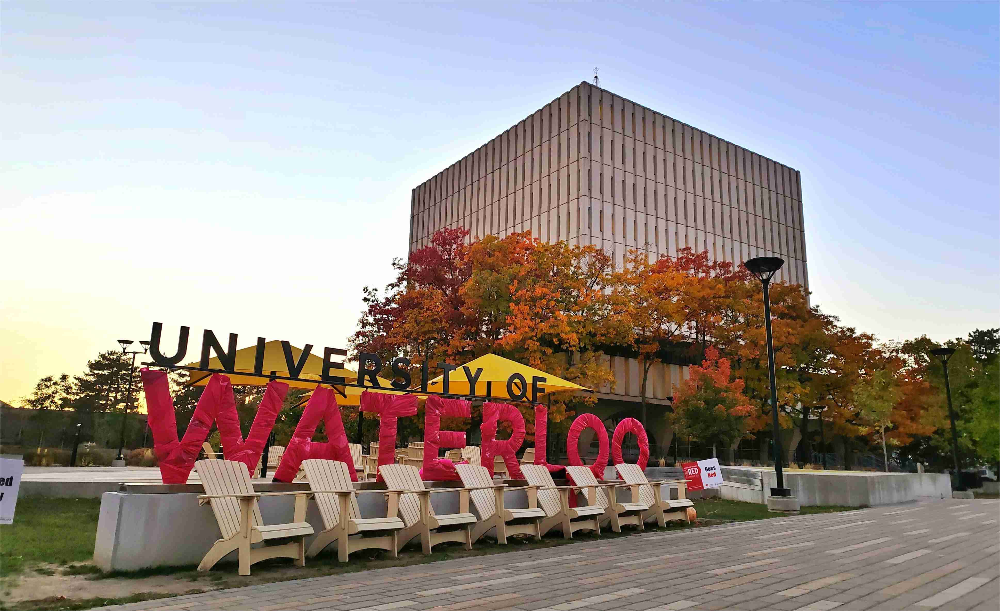

Software Development Engineer
2024.7 - Present
Bytedance, Data-AML-Engine
- Focused on the development and maintenance of a large-scale recommender system training framework
Stay simple. Stay curious.
Hello! My name is Chen Qiqian [陈启乾] ("Qiqian Chen" is my name in western name order). Here is my Curriculum Vitae, which serves as the short version of this webpage.
Click the button below to download CV:
CV(English) CV(Chinese)Bytedance, Data-AML-Engine
I entered Tsinghua University in Fall 2020, majoring in Software Engineering in the School of Software as an undergraduate student.
My cumulative GPA is 3.75 out of 4, and I'm ranked in the top 30% in the School of Software.
Selected high-scoring courses (A-/4.0 and above):
In Fall 2022, I went to the University of Waterloo, Canada as an exchange student. I mainly took Computer Science courses in the Math Faculty.
I took the following five courses, and average grade in that term is 89.8 out of 100:
I am proud to have attended one of China's most prestigious high schools, the High School Affiliated to Renmin University of China (RDFZ). I spent two years studying for the National Olympiad in Informatics (NOI), and won a First Prize in the National Olympiad in Informatics in Provinces (NOIP) in 2018.
Overall, my research interests lie in optimizing and innovating computer software systems to facilitate and scale real-world applications:
The following part introduces industry/research experiences I have had.
Bytedance, Data-AML-Engine
ALCHEM Lab, Purdue University
Student Research Training Program(SRT), Tsinghua University.
Risk Management Technologies Department, Digital Finance, Ant Group
Pacman Lab, Tsinghua University
I focused on developing a graph mining system that could efficiently process heterogeneous hardware (CPU and GPU). I explored algorithmic and architectural optimization strategies for various graph mining applications, with a particular emphasis on Pattern Matching and Frequent Subgraph Mining (FSM). Specifically, I designed and implemented dynamic parallel strategies to optimize the search tree widths of the frequent patterns that form a tree by their vertex numbers. Through this approach, I was able to achieve efficiency improvements of up to several hundred times in extreme cases.
GraphSet: High Performance Graph Mining through Equivalent Set Transformations.
Tianhui Shi, Jidong Zhai, Haojie Wang, Qiqian Chen, Mingshu Zhai, Zixu Hao, Haoyu Yang, Wenguang Chen.
I enjoy collaborating with others on projects, and I had the opportunity to work on several courses and personal projects spanning from my time in high school to the present day.

A parallel collision detection algorithm implemented in Rust and wgpu package. This project served as my introduction to Rust programming.
An Android forum app with Kotlin, Jetpack Compose and Django. I was responsible for the protocol design and frontend development. I also tackled several complex components, including WebSocket-based chats and notifications, a rich-text editor, and a video player.

A Web Python IDE with Vue3, TypeScript and Flask. I was responsible for the editor frontend, and I also designed the structure of the application.
A mock website of Tsinghua University's campus network. This was the course project for Web Front-end Development, aimed at practicing with the Vue framework.
A C to LLVM compiler using ANTLRv4 and Python llvmlite package, and it supports the compile of function, loop, and local variables etc. This is the course project on Principles of Assembly and Compilation.

A Windows-painter like application written with MASM and Win32 APIs, and this is the course project on Principles of Assembly and Compilation. This program was quite complex, and learning MASM was so hard that we put entire code in one file.
A GUI chess game written in C++ with Qt framework. The whole developing process was less than three weeks.

A simple simulator written in C++ of an extremely reduced RISC instruction set. This program simulates assembly code, calculates memory usage, and outputs the result to a BMP image.
A sudoku solver written in a game language: Scratch. I regard this as the start point of my programming life.